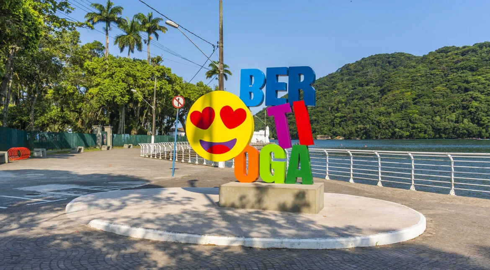

Bertioga
Ao norte do Guarujá, na Baixada Santista, Bertioga se destaca principalmente pelas praias com aspectos mais selvagens, como Boracéia e Guaratuba, que proporcionam um refúgio tranquilo para moradores e visitantes.
De um modo geral, a cidade oferece uma ótima infraestrutura de comércios, com diversas opções de áreas mais residenciais, desde casas de praia até apartamentos em condomínios fechados próximos da natureza do litoral paulista.
Além de contar com os serviços complementares das cidades vizinhas, os pontos de interesse como o Forte São João e a Trilha da Prainha Branca revelam a história e a beleza natural de Bertioga.
Com uma economia baseada em comércio, turismo e pesca, o município tem acesso pela Rodovia Mogi-Bertioga, e costuma ser um destino encantador de praias reconhecidas, como a badalada São Lourenço.
Fundada em 1531, Bertioga mantém seu charme de vila de pescadores, transformando-se ao longo do tempo em uma estância balneária muito procurada especialmente durante o verão.
